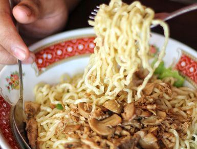
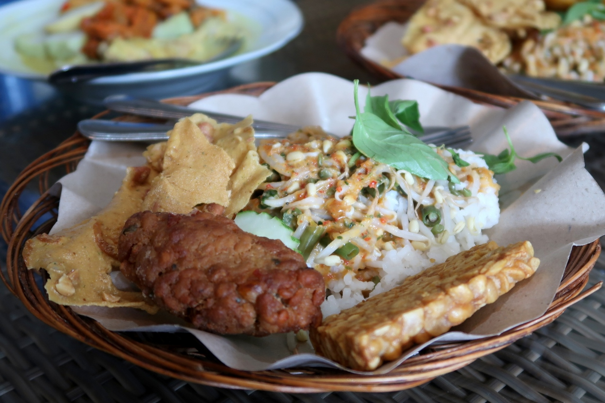
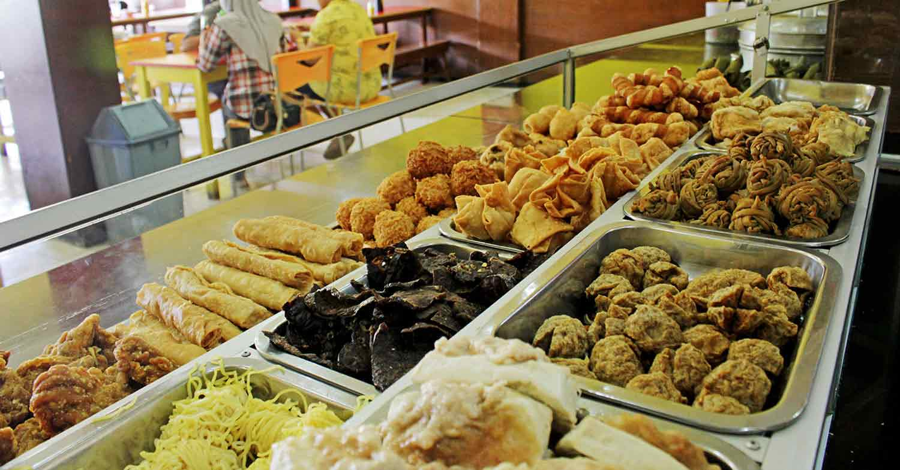
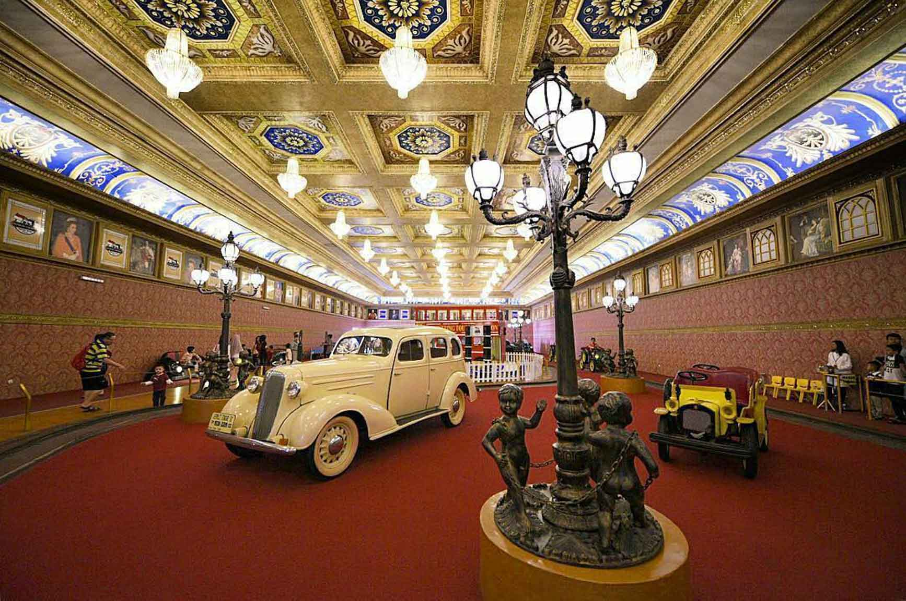
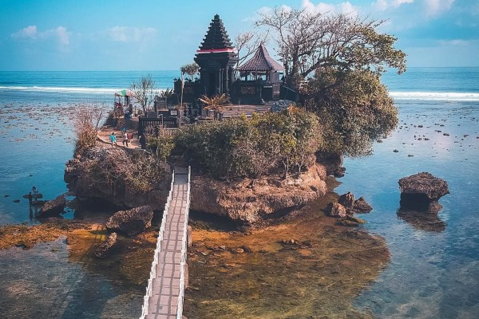
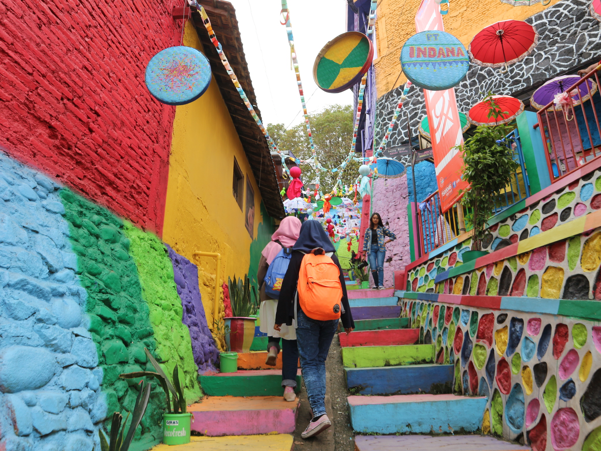
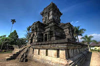
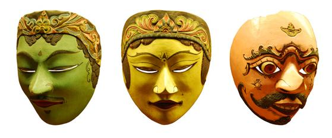
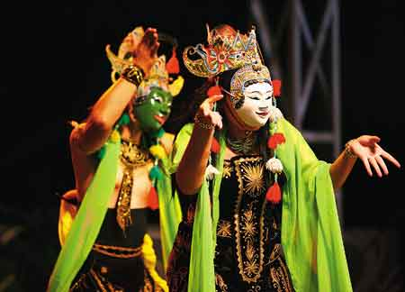

Kuliner Kota Malang

Mie Gadjah Mada
Sesuai dengan namanya, tempat ini menyajikan olahan mi. Dari berbagai olahan mi yang ditawarkan, menu andalannya adalah mi ayam jamur. Satu porsi terdiri dari mi, potongan jamur, daging ayam suwir, sawi, serta taburan bawang goreng dan daun bawang. Tak ketinggalan kuah bening yang gurih. Mie Gajah Mada berada di Jalan Pasar Besar 17A. Tempat kuliner Malang satu ini merupakan salah satu warung yang sudah ada sejak lama namun tetap menampilkan dekorasi dan suasana old fashion.

Pecel Kawi
Kabarnya Pecel Kawi sudah ada sejak 1979 dan selalu ramai pembeli hingga sekarang. Pecel Kawi ini terkenal akan bumbu kacang yang gurih dan sedikit lebih kental dari bumbu pecel pada umumnya. Satu porsi Pecel Kawi terdiri dari nasi putih, sayuran, lauk-pauk, dan bumbu kacang kental. Anda juga bisa memilih lauk sendiri, mulai dari telur goreng, dadar jagung, hingga lele goreng. Anda bisa menyantap pecel kawi di Jalan Kawi Atas No 43B.

Sate Landak
Bosan dengan olahan kuliner Malang yang biasa aja? Anda bisa mencicipi kuliner ekstrem berupa sate landak Bu Ria di Jalan Raya Bugis 47 Saptonegoro, Palis. Warung Sate Landak Bu Ria menyajikan ragam olahan kuliner ekstrim, di antaranya sate landak, sate bulus, dan sate biawak. Selain sate ada ada juga menu olahan sup. Tekstunya empuk dan memiliki rasa gurih dijamin bikin siapapun ketagihan. Kuliner Malang yang unik ini sudah ada sejak tahun 2001 lalu.

Bakso Presiden
Salah satu kuliner Malang yang khas adalah bakso. Anda bisa menemukan kedai bakso dengan mudah di seluruh penjuru kota. Tapi, salah satu yang paling terkenal adalah Bakso President yang sudah berdiri sejak 1977. Kedai bakso ini berada di Jalan Batanghari No 5. Ada berbagai jenis bakso yang bisa kamu pilih di Bakso President, mulai dari bakso kecil, bakso besar, bakso telur, bakso goreng, bakso urat, bakso tulang muda, bakso goreng udang, siomai basah, hingga bakso bakar.
Wisata Kota Malang

Museum Angkut
Boleh dibilang Malang memiliki destinasi wisata yang cukup lengkap, tak hanya menyajikan destinasi wisata alam dan kuliner saja yang terkenal. Hal tersebut didasarkan pada daya tarik sejarah yang dimiliki Malang dimana dulunya Malang adalah salah satu pusat peradaban semenjak zaman prasejarah. Tak heran jika di Kota Apel terdapat banyak museum yang dapat dikunjungi, salah satunya adalah Museum Angkut.
Museum ini cukup terkenal bagi banyak traveller di Indonesia dan berbagai usia. Museum dengan luas mencapai 3,8 hektare ini memiliki koleksi yang cukup lengkap. Sesuai dengan namanya koleksi museum ini adalah kendaraan dari berbagai era dan berbagai Negara.

Pantai Balekambang
Malang nyatanya tak hanya menyajikan panorama keindahan gunung maupu dataran tinggi. Di Malang Anda juga dapat menikmati keindahan daerah pesisir bagian selatan yang tentunya indah dan tak kalah cantik dibandingkan Bali. Yang membedakan antara pantai di Bali dengan pantai di Malang adalah besarnya ombak dimana pantai di Malang cenderung memiliki ombak yang besar. Hal tersebut dikarenakan letaknya yang berada langsung menghadap ke samudra.
Salah satu destinasi pantai di Malang yang wajib dikunjungi adalah pantai Balekambang. Pantai ini sepintas memiliki bentuk yang mirip di Bali, tepatnya objek wisata Tanah Lot dimana di pantai tersebut terdapat Pura di pulau kecil yang berdekatan dengan pesisir. Pura tersebut bernama Pura Amerta Jati dan berdiri di atas pulau bernama Pulau Ismoyo.

Kampung Jodipan
Kampung Jodipan belakangan tengah viral berkat pengelolaan kampung kumuh yang disulap menjadi perkampungan yang indah bersih dan tentunya fotogenic. Pengelolaan Kampung Jodipan yang kini telah bertransformasi menjadi kampung wisata adalah gagasan dari sekumpulan mahasiswa Universitas Muhammadiyah Malang (UMM) yang berniat merubah wajah kumuh perkampungan ini melalui lukisan mural, warna wari cat rumah, hingga penyediaan sarana kebersihan untuk menjadikan kampung ini tetap bersih dan terawat.
Kampung yang terletak di pinggiran sungai berantas ini saat ini telah berubah menjadi tempat yang selalu ramai oleh traveller maupun fotografer. Beberapa spot menarik objek wisata ini diantaranya adalah Jembatan Embong Berantas. Letak jembatan ini hanya berjarak 500 meter dari Stasiun Malang Kota Baru. objek wisata ini pun baru dibuka pada tahun 2017 dan saat ini menjadi sarana umum yang menghubungkan Kampung Jodipan dengan Kampung Tridi.
Budaya Kota Malang

Candi Singosari
Salah satu peninggalan bersejarah di Malang adalah candi Singosari. Dikenal
juga dengan candi Kendedes, dibangun untuk menghormati Raja Kertanegara,
raja terakhir kerajaan Singasari yang meninggal tahun 1292.
Didirikan tahun 1300 bersamaan dengan diselenggarakannya upacara shrada
ditempat ini. Ciri khas candi singasari adalah dua arca raksasa Dwarapala,
yang diyakini sebagai penjaga istana.

Topeng Malang
Di Kota Malang terdapat seni pemahatan topeng yang asli bercirikan khas Malang.
Berdasarkan beberapa catatan sejarah menyebutkan bahwa Topeng Malang adalah
sebuah kesenian kuno yang usianya lebih tua dari keberadaan Kota Apel ini.
Topeng ini pun sudah diperkenalkan sejak zaman kerajaan Gajayana kala itu.
Para pemahat Topeng Malangan sudah turun temurun sampai sekarang, walaupun
jumlahnya tidak terlalu melonjak banyak. Pada jaman dulu apresiasi pada Topeng Malang
ini diwujudkan dengan bentuk pertunjukan saat ada acara tertentu seperti pernikahan,
selamatan, dan hiburan pejabat tinggi kala itu.

Tari Topeng Malang
“Tari Topeng Malang” dapat diartikan sebagai gerakan badan yang berirama dengan diiringi
bunyi-bunyian dengan menggunakan penutup muka yang menyerupai muka orang. Tari ini murni
berasal dari Malang. Kedungmonggo sebagai sebuah dusun di kaki gunung Kawi merupakan salah
satu kantong persebaran seni budaya tari topeng Malang.